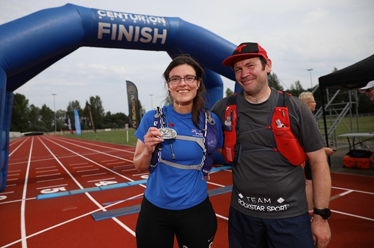

NDW100 3rd August 2019
It was one of hardest events I done, or I forgot about the pain that comes with 100 miler, writes Bet Benn.
On start we had chat with Andy wish each other luck and said see you in finish. I didn't believe it myself that I will get there after last time retiring at 30 miles.
Horn went and we went. It was nice morning sun was still low and great to watch it. Somebody commented we will have nice sun rise tomorrow. It's too far to think about it.
Pretty soon my legs start to cramp first time ever, ask friend if he has salt he didn't but gave me some crampfix. It tasted as vinegar but after 3 miles was ok.
Soon was Knockholt, was telling the lady I was with that I will stop for 15 min. Friend greet me and was joking that I am after cut off, F off Steve. Change top, socks, look after feet. Where is the sock or I am sitting on it..quick pasta diner in. Where is the fork they gave it to me? Don't know eat it from the bowl. Wipe face...say thank you and out. Lady stayed there and from the look she was retiring. Shame.
Other section to Wrotham..somebody is shining torch. So I turn do you need it it's still light? Destroying my night vision... These people annoy me on good day and when I am tired even more with powerful torch casting shadows of me that I can't see. He turn it off, and I was annoyed so tried to get ahead so he doesn't cast shadow of me later on.
Wrotham feeling low, food don't know what I want let's try something. Coffee had to return looking at the volunteer guilty that I can't drink coffee and they understand. Off into darkness. There I lost other new friend and made new one.
Then is blur I got somehow to Blue Bell Hill, leaving vomit trail and trying to drink small amounts and eat small bits.. Then I get down and up and down to Detling seeing nice sun rise, and meeting pacer... 30 min to cut off.
Quick get out all stuff that is not mandatory from my bag, and out of checkpoint. Phil is doing great job and makes me chase him, and is pleased when we are moving 15 min/ mile. And then I remember having rest in last checkpoint 3 minutes sleep. Phil Bet you have 15 sec to get going. We are off again.
It seems doable something like parkrun and bit. I can do parkrun tired tree to tree strategy.
Then we went to Ashford and he is saying where it is. I can't believe it. I made it thanks Phil, almost crying. I can see the last 300 m on track. I just want to walk. Phil need to run nobody walks on track ok I will try sprinting 100m. Finnish it's done in 29:24:09.
Hug with Phil. And chair and sausage and coffee with lots of sugars.

The results are here.